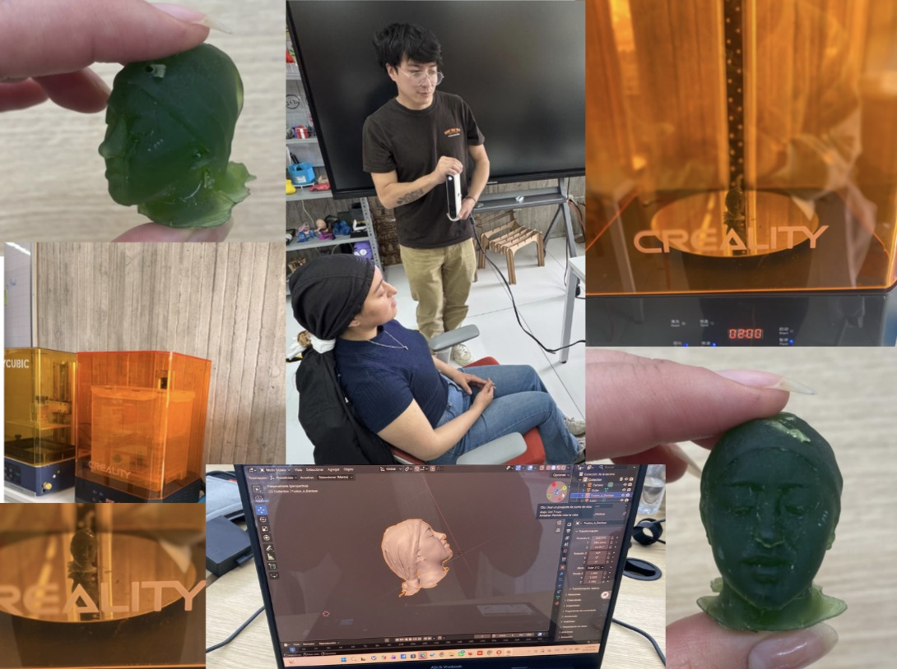

DOCUMENTACIÓN · SEMANA 05
Semana 05
Durante la quinta semana trabajamos con tecnologías de digitalización tridimensional y fabricación aditiva. Escaneamos a Denisse, una integrante del grupo, para obtener un modelo digital de su figura. Posteriormente, modificamos el modelo en Blender y lo preparamos en CHITUBOX para su impresión mediante tecnología de resina.
📌 Tema de la semana
Escaneo tridimensional, edición digital de una figura en Blender y preparación del modelo para impresión 3D en resina mediante CHITUBOX.
Periodo: 19 al 25 de octubre de 2026.
🔎 Descripción de la actividad
La actividad consistió en digitalizar la figura de Denisse mediante un escáner 3D para obtener una representación tridimensional. A partir de ese resultado, trabajamos con el modelo digital para realizar modificaciones y continuar con su preparación para la fabricación.
El proceso permitió conocer diferentes etapas del flujo de trabajo, desde la captura de la geometría de una figura real hasta la preparación de un modelo para imprimirlo en resina.
⚙️ Etapas del proceso
Escaneo 3D
Utilizamos un escáner tridimensional para capturar la geometría de Denisse y generar una representación digital de su figura.
Edición en Blender
Importamos el modelo escaneado en Blender y realizamos modificaciones en su geometría digital antes de continuar con el proceso de fabricación.
Preparación en CHITUBOX
Trasladamos el modelo modificado a CHITUBOX para preparar su orientación, configurar los parámetros de impresión y generar las capas necesarias para la impresión en resina.
🛠️ Herramientas utilizadas
Escáner 3D: permitió capturar la geometría de una figura real y obtener un modelo digital tridimensional.
Blender: programa utilizado para editar y modificar la geometría del modelo obtenido mediante el escaneo.
CHITUBOX: herramienta utilizada para preparar el modelo para la impresión 3D en resina, configurar su orientación y generar las capas de fabricación.
💡 Importancia del flujo de trabajo
Digitalización
El escaneo permite obtener una malla tridimensional a partir de la captura de un objeto o figura real.
Modificación del modelo
La edición digital permite trabajar sobre la geometría obtenida y realizar cambios antes de preparar la pieza para su fabricación.
Fabricación aditiva
La preparación del archivo permite organizar el modelo y generar las capas que utilizará la impresora 3D de resina.
DOCUMENTACIÓN VISUAL
📷 Evidencias
Registro visual del escaneo tridimensional, la edición del modelo en Blender y su preparación para impresión en resina.

Evidencia del trabajo de digitalización y preparación del modelo tridimensional.
🌱 Lo aprendido
Durante esta semana conocimos el proceso de digitalización tridimensional mediante escaneo y aprendimos cómo trabajar con un modelo digital en un programa de edición.
También comprendimos la importancia de preparar correctamente un modelo antes de imprimirlo, desde las modificaciones de su geometría hasta la configuración de las capas en el programa de preparación para impresión en resina.
⚠️ Retos y consideraciones
La calidad del modelo digital depende de la captura realizada durante el escaneo y del procesamiento posterior. Por ello, es importante revisar la geometría obtenida antes de continuar con la edición.
Asimismo, la preparación en CHITUBOX requiere considerar la orientación de la pieza y los parámetros de impresión para generar las capas que utilizará la impresora de resina.